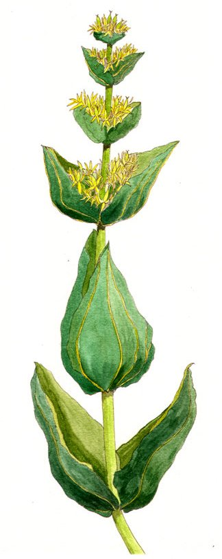

Marmalleau
curatif (macération) - 75 po
↪ plante - montagne - été
↪ plante - montagne - été
 Cette plante à l'allure particulière est la base d'une préparation qui aide à stopper les hémorragies. À l'état brut, appliquer ses fleurs sur une petite coupure met fin aux saignements. Préparée par un herboriste, la macération peut faire de même sur des blessures bien plus conséquentes.
Cette plante à l'allure particulière est la base d'une préparation qui aide à stopper les hémorragies. À l'état brut, appliquer ses fleurs sur une petite coupure met fin aux saignements. Préparée par un herboriste, la macération peut faire de même sur des blessures bien plus conséquentes.
La macération de marmalleau donne un avantage à tous les jets de sauvegarde contre la mort pour l'heure qui suit son absorption, si la blessure a provoqué des saignements. Cela ne fonctionne donc pas contre tous les types de dégâts.

Illustration reproduite avec l'aimable autorisation de Christine Achard
Illustration reproduite avec l'aimable autorisation de Christine Achard
Recueil des plantes d´AideDD